Home
Tijdlijn
Hobby's
Woonplaats
Contact
Yosha Schmits
Woonplaats
Kekerdom
Ik heb me hele leven in kekerdom gewoond. Ik woon hier gewono met me ouders en me zus. Het is een klein dorpje aan de waal en het licht in de ooij polder.
filmpje
Maps
<a href="https://www.mapsdirections.info/nl/maak-een-google-map/">Maak een Google Map</a> van <a href="https://www.mapsdirections.info/nl/">Nederland Kaart</a>